Johana Laica
Soy de la ciudad de Salcedo, tengo 20 años, me gusta jugar fútbol y actualmente estudio Ingeniería en Software.
Bienvenido
Portafolio educativo con las tres unidades completas: Arquitectura del computador, Algoritmos y Python. Navega por el menú para ver cada sección.

Unidad 1 — Arquitectura del Computador
Arquitectura del Computador
Definición: La arquitectura del computador describe la organización lógica y física de los componentes que permiten el funcionamiento del sistema computacional.
Importancia: Es fundamental para optimizar rendimiento, consumo energético y compatibilidad entre hardware y software.
Características: Jerarquía de memoria, conjunto de instrucciones, paralelismo, diseño modular.
Funciones: Procesamiento de instrucciones, gestión de memoria, control de E/S y comunicación entre componentes.
Aplicaciones: Computadoras personales, servidores, sistemas embebidos, dispositivos móviles.
Componentes del Computador

CPU
Definición: Unidad central de procesamiento que ejecuta instrucciones.
Función: Ejecutar cálculos y controlar otros componentes.
Características: Núcleos, frecuencia, cache.
Ejemplo: Procesadores Intel y AMD.
Memoria RAM
Definición: Memoria volátil donde se cargan programas en ejecución.
Función: Almacenar temporalmente datos e instrucciones.
Características: Capacidad, velocidad, latencia.
Ejemplo: DDR4, DDR5.
Disco duro HDD
Definición: Dispositivo magnético de almacenamiento persistente.
Función: Guardar información a largo plazo.
Características: Alta capacidad, menor velocidad que SSD.
Ejemplo: 1TB, 2TB mecánico.
Disco SSD
Definición: Unidad de estado sólido basada en memoria flash.
Función: Almacenamiento persistente de alta velocidad.
Características: Mayor velocidad, menor latencia.
Ejemplo: NVMe, SATA SSD.

Tarjeta madre
Definición: Placa base que interconecta componentes.
Función: Suministrar comunicación y energía entre partes.
Características: Chipset, ranuras, conectores.
Ejemplo: ATX, Micro-ATX.
Tarjeta gráfica
Definición: Procesador especializado en gráficos y paralelismo.
Función: Renderizado de imágenes y cálculos paralelos.
Características: VRAM, núcleos CUDA/Stream.
Ejemplo: NVIDIA, AMD.
Fuente de poder
Definición: Suministra energía eléctrica estable al sistema.
Función: Convertir AC a DC y distribuir voltajes.
Características: Potencia nominal, eficiencia.
Ejemplo: 500W, 80+ Bronze.
Dispositivos de entrada
Definición: Periféricos que permiten introducir datos.
Función: Enviar información al sistema.
Ejemplo: Teclado, ratón, cámara.
Dispositivos de salida
Definición: Periféricos que muestran información al usuario.
Ejemplo: Monitor, impresora, altavoces.
Dispositivos de almacenamiento
Definición: Medios para guardar datos permanentemente.
Ejemplo: HDD, SSD, USB.
Sistemas Operativos
Un sistema operativo (SO) es el software que gestiona los recursos del hardware y ofrece servicios a las aplicaciones.

Windows
Historia: Desarrollado por Microsoft, popular en PCs desde los 80s.
Definición: SO propietario orientado a usuario y empresas.
Características: Interfaz gráfica, compatibilidad amplia, gran ecosistema.
Ventajas: Muchas aplicaciones, soporte comercial.
Desventajas: Licencias, mayor vulnerabilidad histórica.
Aplicaciones: Ofimática, juegos, desarrollo.

Linux
Historia: Kernel iniciado por Linus Torvalds en 1991.
Definición: Sistema operativo libre y modular con múltiples distribuciones.
Características: Estable, seguro, personalizable.
Ventajas: Libre, buena comunidad, ideal para servidores.
Desventajas: Curva de aprendizaje para nuevos usuarios.
Aplicaciones: Servidores, desarrollo, IoT.

macOS
Historia: Sistema de Apple heredero de NeXT, popular en creativos.
Definición: SO propietario para hardware Apple.
Características: Diseño pulido, integración con ecosistema Apple.
Ventajas: Experiencia consistente, buen soporte de multimedia.
Desventajas: Limitado al hardware Apple y costos.
Aplicaciones: Edición, desarrollo, diseño.
Android
Historia: Nacido para móviles, liderado por Google.
Definición: SO basado en Linux para dispositivos móviles.
Características: Open source (parcial), ecosistema de apps en Play Store.
Ventajas: Amplia compatibilidad, personalización.
Desventajas: Fragmentación entre versiones.
Aplicaciones: Teléfonos, tablets, TV.
iOS
Historia: Lanzado por Apple en 2007 con el iPhone.
Definición: SO móvil de Apple, cerrado y optimizado para sus dispositivos.
Características: Seguridad, rendimiento consistente, App Store.
Ventajas: Ecosistema integrado y estabilidad.
Desventajas: Menor personalización y dependencia de Apple.
Aplicaciones: Móviles, tablets.
Sistemas de Numeración
Sistema Decimal
Definición: Sistema posicional de base 10.
Base: 10
Características: Usa dígitos 0-9; posición determina potencia de 10.
Símbolos: 0,1,2,3,4,5,6,7,8,9
Ventajas: Intuitivo para humanos.
Desventajas: No óptimo para lógica digital.
Ejemplo: 345 = 3*10^2 + 4*10 + 5
Sistema Binario
Definición: Sistema posicional de base 2 usado en computación.
Base: 2
Símbolos: 0,1
Ejemplo: 1101₂ = 1*2^3 + 1*2^2 + 0*2 +1 = 13₁₀
Sistema Octal
Definición: Base 8, dígitos 0-7.
Ejemplo: 17₈ = 1*8 +7 = 15₁₀
Sistema Hexadecimal
Definición: Base 16, dígitos 0-9 y A-F.
Ejemplo: 1A₁₆ = 1*16 +10 = 26₁₀
Tabla comparativa
| Sistema | Base | Símbolos ejemplos |
|---|---|---|
| Decimal | 10 | 0-9 |
| Binario | 2 | 0-1 |
| Octal | 8 | 0-7 |
| Hexadecimal | 16 | 0-9,A-F |
Conversión: ejemplo paso a paso
Convertir 45₁₀ a binario: 45/2 = 22 r1, 22/2=11 r0, 11/2=5 r1, 5/2=2 r1, 2/2=1 r0, 1/2=0 r1 → leer restos de abajo arriba: 101101₂
Unidad 2 — Algoritmos y Diagramas
¿Qué es un algoritmo?
Un algoritmo es un conjunto finito de pasos ordenados y bien definidos para resolver un problema o realizar una tarea.
Importancia: Permiten automatizar procesos, optimizar recursos y diseñar soluciones reproducibles.
Características: Finito, definido, efectivo, entrada/salida.
Ventajas: Claridad, replicabilidad, eficiencia.
Aplicaciones: Ordenamiento, búsqueda, procesamiento de datos, inteligencia artificial.
Algoritmos de la vida real (ejemplos)
Preparar café
Objetivo: Obtener una taza de café.
Pasos: 1. Hervir agua. 2. Colocar café en filtro. 3. Verter agua. 4. Servir.
Lavarse las manos
Objetivo: Limpiar manos.
Pasos: Mojar, aplicar jabón, frotar 20s, enjuagar, secar.
Cocinar arroz
Objetivo: Cocinar arroz suelto.
Pasos: Lavar arroz, medir agua, hervir, cocer a fuego lento, reposar.
Diagramas de Flujo
Un diagrama de flujo representa gráficamente la secuencia lógica de un algoritmo utilizando símbolos estandarizados.

Símbolos principales
- Inicio/Fin
- Proceso
- Entrada/Salida
- Decisión
- Documento
- Base de datos
- Conector
Ejercicio resuelto
Diagrama para verificar si un número es par: Inicio → Leer n → n%2==0? → Si sí mostrar "par" → Fin; Si no mostrar "impar" → Fin.
Pseudocódigo
El pseudocódigo es una representación textual intermedia entre lenguaje natural y código que facilita la planificación.
Estructuras
Secuencial: Ejecutar instrucciones en orden.
Condicional: if / if-else / if-elif-else para tomar decisiones.
Repetitiva: while / for para iterar.
Ejemplo en PSeInt
Algoritmo Suma Definir a,b,resultado Como Entero Escribir "Ingrese a" Leer a Escribir "Ingrese b" Leer b resultado = a + b Escribir "Resultado: ", resultado FinAlgoritmo
Unidad 3 — Python y Mapas de Karnaugh
Introducción a Python
Historia: Creado por Guido van Rossum a finales de los 80s y lanzado en 1991.
¿Qué es Python? Lenguaje de programación interpretado de alto nivel, multiparadigma.
Características: Tipado dinámico, sintaxis legible, gran biblioteca estándar.
Ventajas: Fácil de aprender, gran comunidad.
Desventajas: Menor rendimiento en comparación con compilados en bruto.
Aplicaciones: Web, ciencia de datos, automatización, IA.

Variables y tipos de datos
Variables
En Python se definen asignando: x = 5. No se declara el tipo explícitamente.
Tipos básicos
- int — enteros
- float — números decimales
- str — cadenas
- bool — True/False
- list — listas mutables
- tuple — tuplas inmutables
- dictionary — pares clave:valor
- set — conjuntos
Operadores
Aritméticos: + - * / // % **
Relacionales: == != > < >= <=
Lógicos: and, or, not
Asignación: =, +=, -=, *=
Entrada y salida
input() — lee texto del usuario. print() — muestra en pantalla.
# Ejemplo
nombre = input('Ingresa tu nombre: ')
print('Hola', nombre)
Estructuras condicionales y ciclos
Condicionales
if condicion: # hacer algo elif otra_condicion: # hacer otra cosa else: # alternativa
Ciclos
for i in range(5): print(i) while condicion: # repetir
Funciones
Definición de funciones con def, parámetros y retorno con return.
def sumar(a,b): return a+b print(sumar(2,3)) # 5
Listas, tuplas y diccionarios
Listas
Mutable, ordenada. Ej: [1,2,3]
Tuplas
Inmutables. Ej: (1,2,3)
Diccionarios
Pares clave:valor. Ej: {'nombre':'Ana', 'edad':20}
Mapas de Karnaugh
Qué son: Herramienta para simplificar funciones booleanas mediante agrupamiento visual.
Importancia: Facilitan minimizar expresiones lógicas optimizando circuitos digitales.
Reglas: Agrupar 1,2,4,8 celdas en potencias de 2; agrupar celdas contiguas (envolventes permitidas).

Ejercicios de Python resueltos
Ejercicio 1 — Suma de lista
def suma(lista): total=0 for x in lista: total+=x return total print(suma([1,2,3,4])) # 10
Ejercicio 2 — Fibonacci (iterativo)
def fib(n): a,b=0,1 for _ in range(n): a,b=b,a+b return a print([fib(i) for i in range(8)]) # 0,1,1,2,3,5,8,13